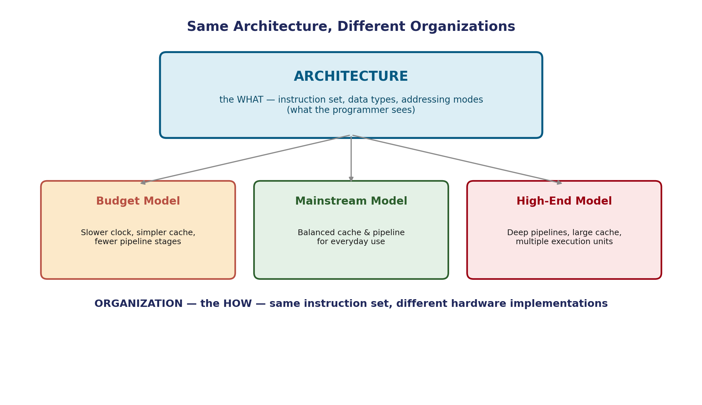

Computer Organization vs Architecture
This course is literally named "Computer Organization and Architecture" — which raises an obvious question worth answering properly instead of glossing over: aren't those the same thing? This subject is best understood from three distinct angles — organization, design, and architecture — and precision about which is which is one of the most commonly tested, and commonly confused, ideas in this subject.
Three Perspectives, in Precise Terms
When dealing with computer hardware, it's customary to distinguish between three things:
Computer organization is concerned with the way the hardware components operate and the way they are connected together to form the computer system. The various components are assumed to be already in place, and the task is to investigate the organizational structure to verify that the computer parts operate as intended.
Computer design is concerned with the hardware design of the computer. Once specifications are formulated, it's the designer's task to develop the hardware — determining what hardware should be used and how the parts should be connected. This is sometimes called computer implementation. (Covered in full on the next page.)
Computer architecture is concerned with the structure and behavior of the computer as seen by the user. It includes information formats, the instruction set, and techniques for addressing memory.
Notice the difference in framing between the first two: organization looks at components already built and asks "does this actually work as intended?" — a verification mindset. Design looks at a specification not yet built and asks "what hardware do I build, and how do I connect it?" — a construction mindset. Architecture, meanwhile, deliberately ignores the hardware entirely and asks only what the user — the programmer — can see and rely on.
Computer Architecture — the "What"
Architecture includes:
- The instruction set — which operations the machine understands (add, load, jump, compare...)
- Information formats — the data types the hardware directly supports
- Addressing modes — the techniques for addressing memory
Architecture is a specification — a contract. If two machines implement the same architecture, a program written for one will run correctly on the other, even if the two machines are built completely differently inside.
Computer Organization — Verifying the "How"
Organization, in this framing, isn't primarily about designing the hardware — it's about examining hardware that's already been built and confirming the pieces are connected and operating correctly. For additional clarity beyond the brief definition above: this naturally includes things like:
- Control signals and sequencing — the actual timing details covered in the block diagram topic
- Interfaces between the CPU, memory, and peripherals
- The specific memory technology used, and how it's organized (cache sizes, memory hierarchy — covered later in this course)

Same Architecture, Different Organizations
A widely-used way to see the distinction, beyond the definition above: every processor in a given product family — every chip implementing the same instruction set — shares the same architecture. But different models within that family have different organizations: different clock speeds, different cache sizes, different numbers of execution units — all built to execute the exact same instruction set, just with different cost/performance trade-offs.
Why the Distinction Matters
This isn't just academic hair-splitting — it has real, practical consequences:
- Software portability: because architecture is a stable contract, software compiled for a given instruction set keeps working across generations of hardware that implement it, even as the underlying organization changes dramatically.
- Hardware innovation: because organization is free to change without breaking the architecture, chip designers can improve performance (faster caches, better pipelining) without forcing every programmer to rewrite their software.
- Career relevance: "architecture" work (designing instruction sets) and "organization" work (verifying and refining the actual hardware) are genuinely different specializations within computer engineering.
Common Pitfalls
- Architecture and organization are not interchangeable terms — architecture is the programmer-visible specification; organization concerns hardware already in place, and whether it operates as intended.
- Organization is not simply "how architecture gets designed" — that's specifically what computer design (next page) covers. Organization presumes the hardware already exists and asks whether it works correctly.
- Different organizations can implement the identical architecture — this is normal and expected, not a contradiction. It's exactly how product families with multiple performance tiers work.
Applications
- Processor families (like x86 or ARM) are the textbook real-world example — one architecture, many organizations across budget to flagship chips.
- Backward compatibility in software relies entirely on architecture staying stable even as organization evolves generation after generation.
- Chip design teams are often literally organized around this split — architecture teams define the instruction set; organization/implementation teams build the actual silicon.
Summary
| Architecture | Organization | Design | |
|---|---|---|---|
| Question answered | What does the machine do? | Does the built hardware operate as intended? | What hardware should be built, and how connected? |
| Visible to | The programmer (user) | The hardware engineer verifying it | The hardware designer building it |
| Mindset | Specification / contract | Verification of components already in place | Construction from a specification |
| Includes | Instruction set, information formats, addressing modes | Control signals, interfaces, memory technology | Covered in full on the next page |